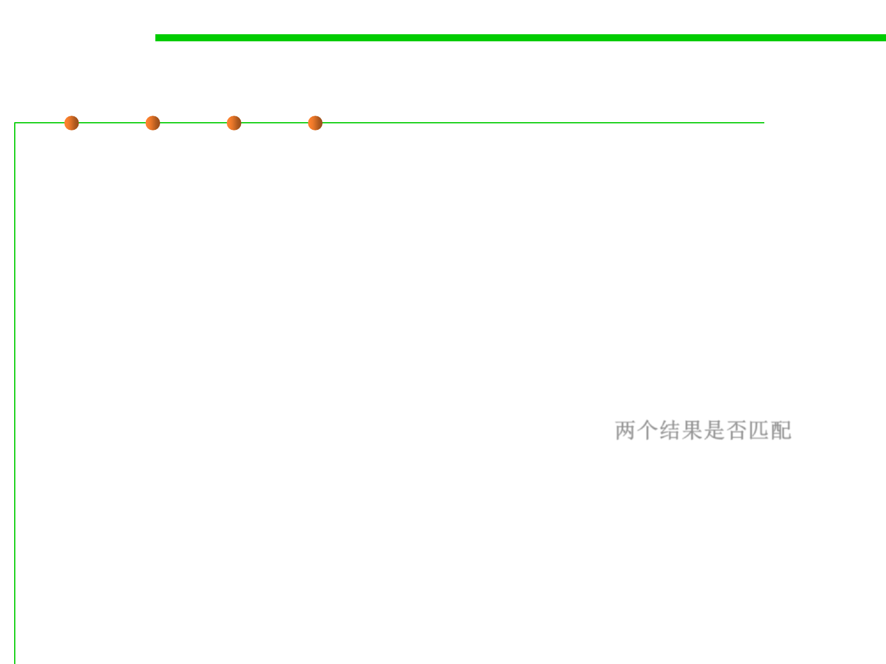

7.3 Assertions and Defensive Programming
What to Assert: more scenarios
▪ A pointer is non-NULL
▪ An array or other container passed into a method can contain at least
X number of data elements
▪ A table has been initialized to contain real values
▪ A container is empty (or full) when a method begins executing (or
when it finishes)
▪ The results from a highly optimized, complicated method match the
results from a slower but clearly written routine 两个结果是否匹配